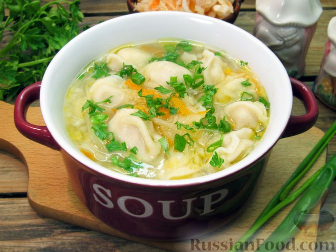

8 (800) 555-35-35
Кислые щи с пельменями:
Очень быстрые щи с пельменями и квашеной капустой, которые готовятся из минимума продуктов всего за 25-30 минут. Щи получаются вкусными, нетяжелыми, но достаточно сытными. Это аппетитное первое блюдо позволит без особых затрат времени и сил накормить всю семью!
- пельмени замороженные - 300 г
- Капуста квашеная - 150 г
- Лук репчатый - 60 г
- Масло растительное - 30 мл (2 ст. ложки)
- Лист лавровый - 2 шт.
- Соль - по вкусу
- Перец чёрный молотый - по вкусу
- Лук зелёный - 10 г (8-10 перьев)
- Зелень петрушки (или укропа) - 7 г (3 веточки)
- Подготавливаем все необходимые продукты. Если капуста слишком кислая, ее нужно немного промыть и отжать. В кастрюле доводим до кипения 1 л воды.
- Кислые щи с пельменями - шаг №2 Капусту опускаем в кипящую воду и варим 20 минут.
- Кислые щи с пельменями - шаг №3 Пока капуста готовится, репчатый лук очищаем и нарезаем маленькими кубиками.
- Кислые щи с пельменями - шаг №4 В сковороде разогреваем растительное масло и обжариваем лук около 5 минут, до золотистости.
- Кислые щи с пельменями - шаг №5 В кастрюлю с капустой добавляем обжаренный лук.
- Кислые щи с пельменями - шаг №6 Следом за луком добавляем пельмени, лавровый лист и соль.
- Кислые щи с пельменями - шаг №7 Варим суп еще около 5-7 минут, до готовности пельменей.
- Кислые щи с пельменями - шаг №8 В самом конце приготовления добавляем чёрный молотый перец и убираем суп с огня.
- Кислые щи с пельменями - шаг №9 Зелёный лук и петрушку мелко нарезаем. Разливаем кислые щи с пельменями по порционным тарелкам и посыпаем измельчённой зеленью. Приятного аппетита!